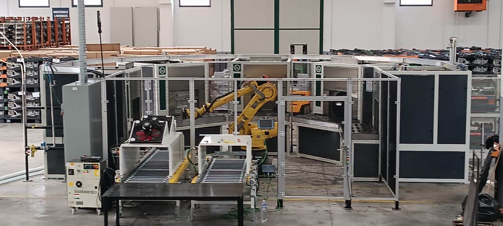
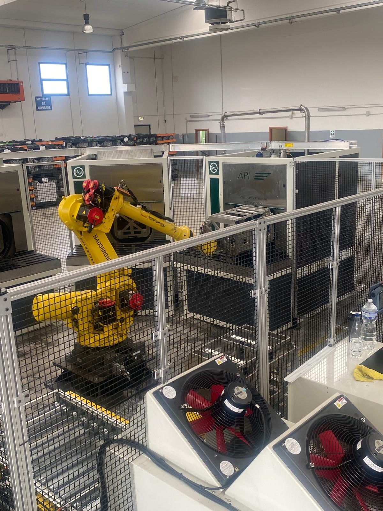
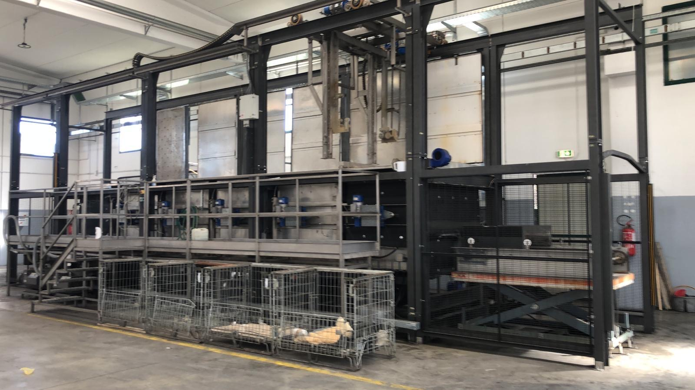
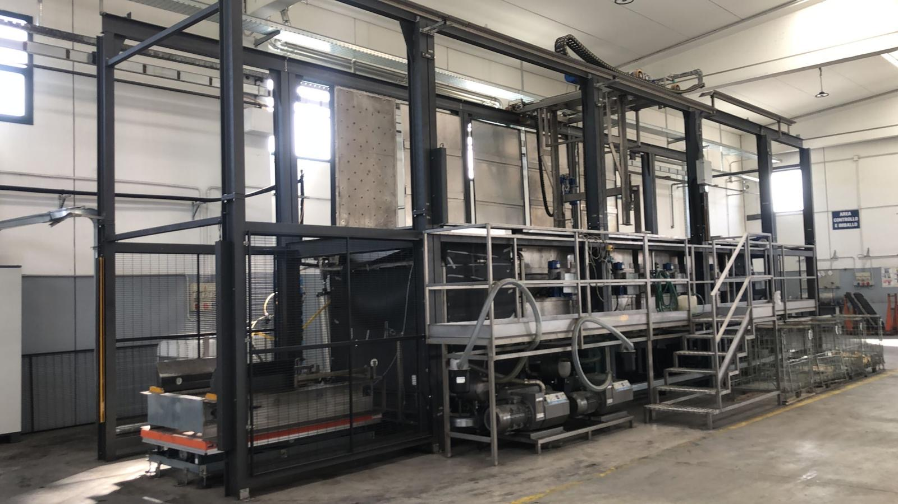

Azienda
SM Technology Service SRL è una società specializzata nell'erogazione di servizi industriali per il settore automotive e meccanico. Forniamo servizi di trattamento e controllo qualità di getti speciali in alluminio destinati ai principali costruttori del comparto automobilistico.
Il nostro sito produttivo si trova a Monteodorisio (CH), nella Zona Industriale Valsinello, con una superficie coperta di 1.500 m² e un'area scoperta di 3.000 m², attrezzata con impianti tecnologici di ultima generazione.
Operiamo su 3 turni di produzione con un team strutturato e qualificato, garantendo continuità operativa e risposta rapida alle esigenze dei clienti. La nostra organizzazione prevede figure dedicate alla qualità, alla produzione, alla supply chain e all'amministrazione.
Sede Legale
Viale Benedetto Croce 277
66100 CHIETI (CH) — ITALIA
Sede Operativa
Zona Industriale Valsinello
Contrada Piana della Zingara
66050 MONTEODORISIO (CH) — ITALIA
Organigramma
Coordinamento generale delle attività operative e strategiche dello stabilimento.
Gestione amministrativa, contabile e delle risorse umane.
Supervisione dei processi di controllo e conformità prodotto.
Gestione degli impianti produttivi e delle attività di manutenzione.
Coordinamento della catena di fornitura e della logistica.
4 operatori per ciascuno dei 3 turni di produzione continua.
Il nostro stabilimento è dotato di impianti automatici di impregnazione di ultima generazione per l'impregnazione sottovuoto di getti speciali in alluminio. Gli impianti garantiscono elevata produttività, ripetibilità del ciclo e la massima qualità del trattamento.

Impianto automatizzato d'impregnazione CAPI SYSTEM
Impianto robotizzato per l'impregnazione sottovuoto di getti speciali in alluminio. Ciclo completo automatizzato con controllo di processo e braccio robotico per la movimentazione dei cestelli.
- Tecnologia: Impregnazione sottovuoto con resina acrilica
- Ciclo: Vuoto → Immersione → Recupero resina → Polimerizzazione
- Polimerizzazione: Bagno in acqua calda a 90°C
- Automazione: Braccio robotico FANUC integrato

Impianto automatizzato d'impregnazione CAPI SYSTEM
Impianto robotizzato per l'impregnazione sottovuoto di getti speciali in alluminio. Ciclo completo automatizzato con controllo di processo e braccio robotico per la movimentazione dei cestelli.
- Marchio: CAPI (impianto certificato)
- Tecnologia: Impregnazione sottovuoto automatica
- Resina: Acrilica termoindurente catalizzata
- Vuoto: Fino a <5 mbar per penetrazione ottimale

Impianto automatico di impregnazione con carroponte e carico/scarico laterale
Impianto automatico di impregnazione con carroponte e carico/scarico lateraleCiclo Completamente Automatico
Vuoto secco, vuoto umido, pressurizzazione, sgocciolamento, lavaggio e polimerizzazione gestiti senza intervento manuale.
Resine Certificate
Resine acriliche metacriliche approvate per settore automotive, aerospaziale, gas, idraulico e alimentare.
Doppia Capacità Produttiva
Due impianti in parallelo garantiscono continuità operativa su 3 turni e capacità di risposta rapida anche per lotti ad alto volume.
I nostri clienti sono i principali costruttori del settore automotive e meccanico. La fiducia di questi partner industriali è il risultato della costanza nella qualità, della puntualità nelle consegne e della capacità di risposta a ogni esigenza produttiva.
Lavoriamo con partner tecnologici selezionati che condividono la nostra visione di qualità e innovazione. Queste collaborazioni ci permettono di offrire soluzioni complete e all'avanguardia nel trattamento dei getti in alluminio.
 Vacuum Impregnation Solutions
Vacuum Impregnation Solutions